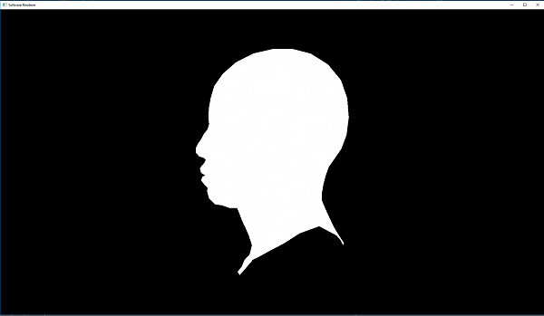
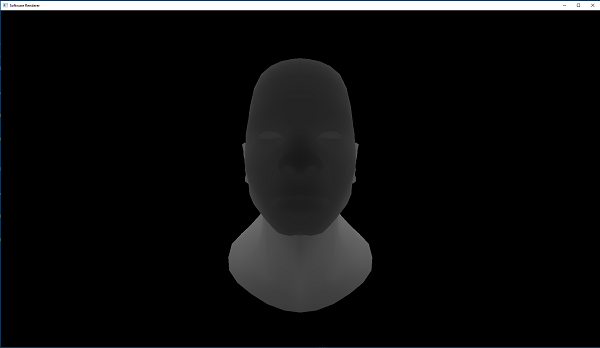
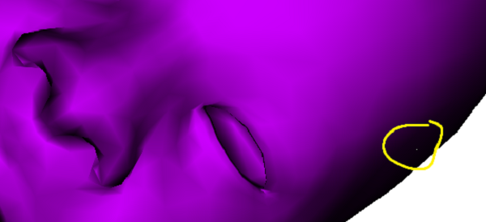
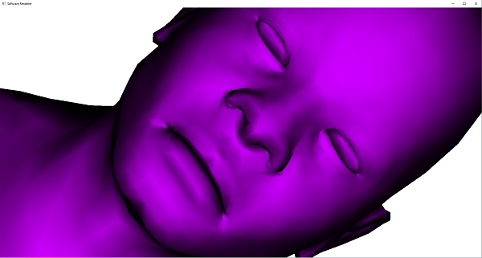
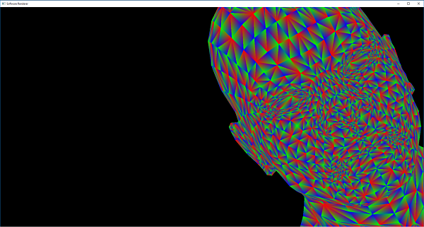
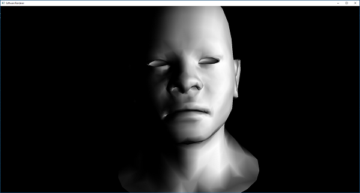
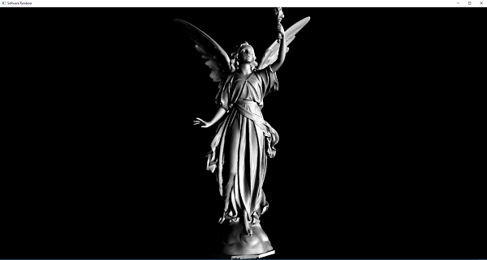

As practice for graphics programming, I created a software renderer from scratch. I implemented the entire graphics pipeline in C/C++ using only the Windows API to blit a bitmap to a window.
I took screenshots along the way, so I'll present this like a slideshow of progress.
The first the I did was write code to rasterize a triangle then a list of triangles. This was quick because I had already written a triangle rasterizer for CS250 (Graphics II).
To draw the head, I read in a .obj, created a list of triangles to render, orthographically projected them to screen space, and rasterized each triangle. To rasterize each triangle: create a bounding box containing the triangle, iterate through each pixel in the bounding box, and check if the pixel is within the triangle using the triangle's 3 plane equations. Later, this method would be useful with parallel code. Also, the point-plane equations can be computed incrementally. The calculations from the previous pixel can be reused to check if the current pixel is within the plane's bounds. Pixels then only need to do an addition and 3 bounds checks.
Line mode rasterization for debugging.
The next step is to move to perspective projection. At first, there were issues trying to figure out the matrix math. But, after doing research and working it out on pencil and paper, I finally got it right.
Next, triangle clipping needed to work for correctness and efficiency. This was done using ideas from the Sutherland-Hodgman Algorithm. Triangles are transformed to clip space, each triangle is clipped against each camera frustum plane, then projected to NDC space with the perspective division.
An issue here is picking a good epsilon value to use when clipping the triangles. Due to floating-point imprecision, you can't clip a triangle exactly on the plane value. Thus, you need to make sure it's clipped just before the plane (less than 1 pixel's distance). Also, this distance needs to be consistent across all triangles and planes or else you might get triangles not lined up.
As shown here, the background is bleeding through the model because clipped triangles aren't consistent. This is due to an epsilon value being chosen as a percentage of line distance rather than a constant distance away from the plane.
Here's the bug when solved. There are now no spots bleeding through the model!
Here's clipping done with all triangles in the model.
Here's lighting introduced to the scene. This is just diffuse lighting using average normals computed on each vertex.
A higher poly mesh!
